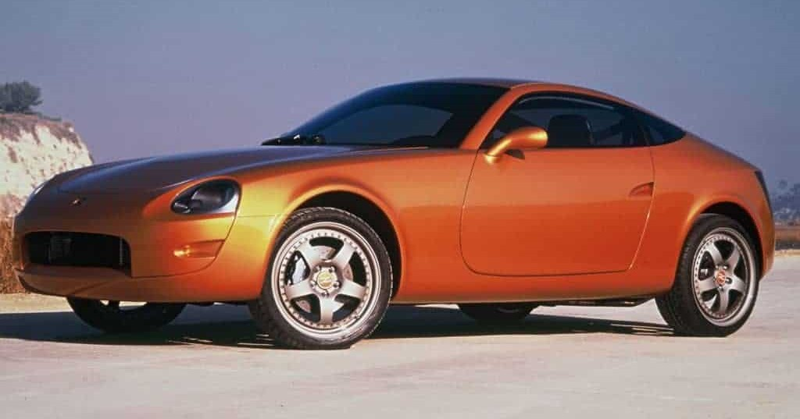
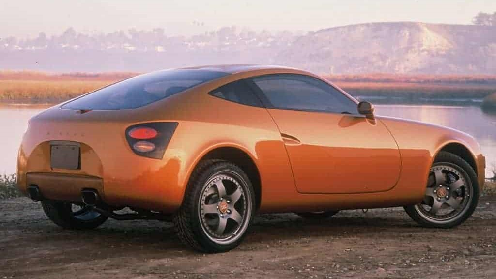
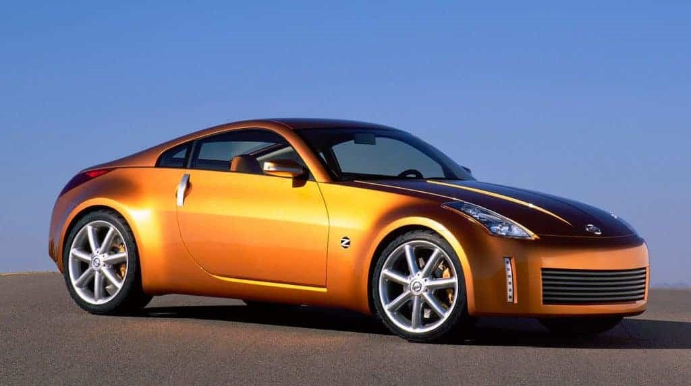

O Nissan 350Z é um pequeno esportivo que nasceu em 2002 como uma resposta a outros modelos da época que tinham um design mais exagerado e pouca potência embarcada.
A primeira aparição da linha Z, antes do Nissan 350Z, se deu em 1999 durante o Salão do Automóvel de Detroit, onde a Nissan apresentava um substituto para o finado 240Z.
O carro conceito tinha um visual bastante chamativo, com sua carroceria pequena e com design esportivo e sua cor chamativa “Lemans Sunset”.
O perfil do carro seria basicamente o mesmo do modelo de produção, ou seja, seria um cupê de duas portas e quatro lugares.

Só que o visual do Nissan 350Z ainda estava longe.
A dianteira exibia faróis arredondados com desenho pouco agradável, e sua entrada de ar no para choque tinha um formato de sorriso invertido.
As laterais eram extremamente limpas e as portas contavam apenas com uma espécie de fenda para a abertura das mesmas.
Já na traseira o precursor do Nissan 350Z era ainda mais feio.
As lanternas traseiras tinham um formato mais amendoado com duas seções ovais, sendo uma para a luz de freio e uma para a de indicação de seta.

O para choque também tinha uma parte côncava com apenas o porta placas ao centro dando uma sensação de profundidade um tanto quanto estranha.
Apesar do seu design um tanto quanto exótico, o 240Z, como também era chamado, era um conceito totalmente funcional.
Ele vinha com um motor 2.4 litros emprestado do Nissan Altima produzindo 200 cavalos e 24,88 kgfm de torque bruto. O modelo conseguiu animar os participantes do salão, mas ainda existiriam melhorias antes dele chegar às ruas como Nissan 350Z.
Nissan Z Concept 2001
Diferentemente do conceito apresentado em 1999, o novo Concept Z de 2001 era basicamente o Nissan 350Z de produção com suas linhas extremamente harmônicas e visual mais equilibrado do que o modelo apresentado cerca de dois anos antes.
